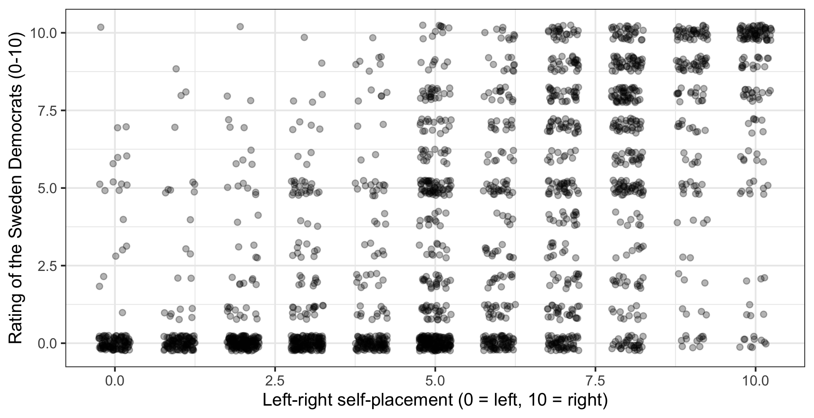
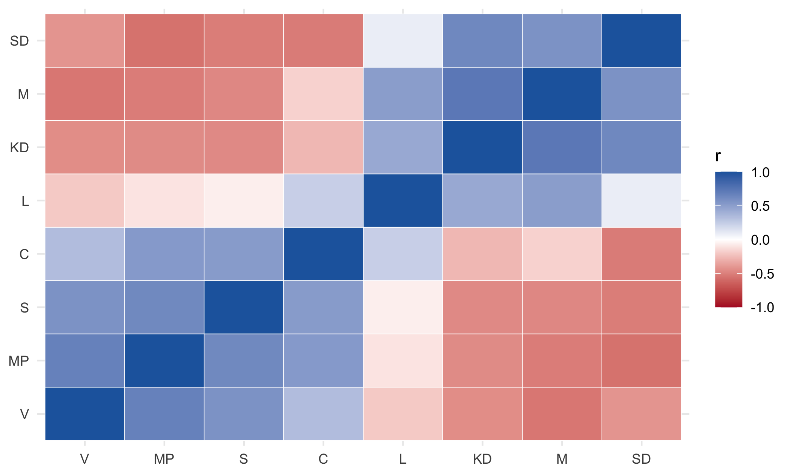
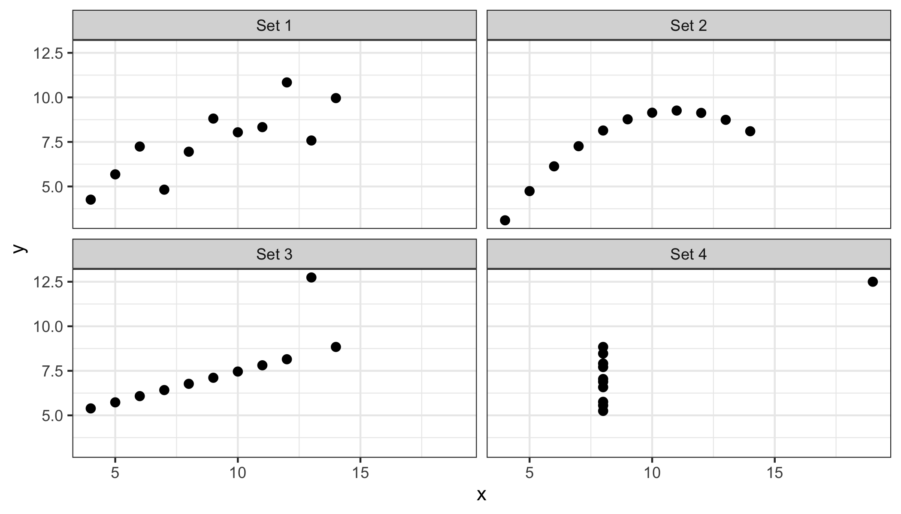

library(ggplot2)
library(dplyr)
swe <- readRDS("data/swe.rds")9 Correlation
Two categorical variables gave us the chi-squared test. One categorical and one continuous gave us the t-test. Two continuous variables give us correlation.
9.1 Look at it first
Always. Every time.
Do people who place themselves to the right like the Sweden Democrats more?
ggplot(swe, aes(x = lr_self, y = like_sd)) +
geom_count(alpha = 0.7) +
labs(
x = "Left-right self-placement (0 = left, 10 = right)",
y = "Rating of the Sweden Democrats (0-10)"
) +
theme_bw()
geom_count() again, because both variables are eleven-point scales and plain points would hide the concentrations.
There is a clear pattern, running from bottom-left to top-right, and it is far from tidy — plenty of people on the right dislike the party and a few on the left like it.
9.2 From covariance to correlation
We want one number for that pattern.
The starting point is the same as in session 6: how far each case sits from the mean of its variable. The difference is that now there are two variables, and we ask whether the deviations go together.
For each respondent, multiply their deviation on one variable by their deviation on the other.
- Both above their means, or both below: the product is positive.
- One above and one below: the product is negative.
Average those products and you have the covariance.
both <- swe |>
filter(!is.na(lr_self), !is.na(like_sd))
dev_lr <- both$lr_self - mean(both$lr_self)
dev_sd <- both$like_sd - mean(both$like_sd)
sum(dev_lr * dev_sd) / (nrow(both) - 1)## [1] 6.288843cov(both$lr_self, both$like_sd)## [1] 6.288843The n - 1 is there for the same reason as in session 6.
Covariance has the same problem variance had: its units are the two variables multiplied together, which here is “scale points times scale points”. The number 6.29 is not comparable to anything.
The fix is to divide by both standard deviations, which strips the units out. The result is the correlation coefficient, written r.
\[r = \frac{\text{covariance of } x \text{ and } y}{s_x \times s_y}\]
cov(both$lr_self, both$like_sd) / (sd(both$lr_self) * sd(both$like_sd))## [1] 0.6075977cor(both$lr_self, both$like_sd)## [1] 0.6075977Because of that division, r always lies between −1 and +1. That is a hard limit, in the sense of session 4: a correlation of 1.3 is not a strong relationship, it is an error.
- +1 — every point on a straight upward line.
- 0 — no linear relationship.
- −1 — every point on a straight downward line.
Our 0.61 is a strong positive relationship by the standards of survey research, where anything above 0.5 between two different constructs is unusual.
9.2.1 Missing values
cor() returns NA if either variable has any missing value, which for survey data is always. The use argument says what to do instead.
cor(swe$lr_self, swe$like_sd, use = "complete.obs")## [1] 0.6075977"complete.obs" drops any respondent missing on either variable. "pairwise.complete.obs" matters for matrices, and appears below.
9.3 Is it real?
cor.test() adds the hypothesis test and a confidence interval.
cor.test(swe$lr_self, swe$like_sd)##
## Pearson's product-moment correlation
##
## data: swe$lr_self and swe$like_sd
## t = 36.919, df = 2329, p-value < 2.2e-16
## alternative hypothesis: true correlation is not equal to 0
## 95 percent confidence interval:
## 0.5813390 0.6325922
## sample estimates:
## cor
## 0.6075977The null hypothesis is that the correlation in the population is zero. Everything from session 6 applies: t is the estimate over its standard error, the p-value is tiny, and the 95% interval runs from 0.58 to 0.63, nowhere near zero.
With 2331 respondents, even a very weak correlation would come out significant. Here is age against left-right placement:
cor.test(swe$age, swe$lr_self)##
## Pearson's product-moment correlation
##
## data: swe$age and swe$lr_self
## t = 1.8991, df = 2446, p-value = 0.05767
## alternative hypothesis: true correlation is not equal to 0
## 95 percent confidence interval:
## -0.001247715 0.077869755
## sample estimates:
## cor
## 0.03837116An r of 0.038 — which is nothing at all — and yet the interval is narrow and nearly excludes zero. Read the coefficient, not the stars.
9.4 Many variables at once
Give cor() several columns and it returns a matrix of every pair.
party_ratings <- swe |>
select(like_v, like_mp, like_s, like_c,
like_l, like_kd, like_m, like_sd)
rating_cor <- cor(party_ratings, use = "pairwise.complete.obs")
colnames(rating_cor) <- c("V", "MP", "S", "C", "L", "KD", "M", "SD")
rownames(rating_cor) <- colnames(rating_cor)
round(rating_cor, 2)## V MP S C L KD M SD
## V 1.00 0.67 0.57 0.33 -0.20 -0.45 -0.54 -0.42
## MP 0.67 1.00 0.62 0.52 -0.10 -0.45 -0.51 -0.56
## S 0.57 0.62 1.00 0.52 -0.06 -0.46 -0.47 -0.51
## C 0.33 0.52 0.52 1.00 0.24 -0.27 -0.17 -0.52
## L -0.20 -0.10 -0.06 0.24 1.00 0.44 0.51 0.09
## KD -0.45 -0.45 -0.46 -0.27 0.44 1.00 0.73 0.63
## M -0.54 -0.51 -0.47 -0.17 0.51 0.73 1.00 0.57
## SD -0.42 -0.56 -0.51 -0.52 0.09 0.63 0.57 1.00"pairwise.complete.obs" computes each pair on whoever answered both, rather than throwing out anyone missing on any of the eight. It saves cases, at the cost of different cells resting on slightly different respondents. colnames() and rownames() then replace the long variable names with party abbreviations, so that the matrix fits on the page.
The diagonal is 1 — every variable correlates perfectly with itself — and the matrix is symmetric, so half of it is redundant.
Read the structure. The first four parties correlate positively with each other and negatively with the last four. Liking the Left Party goes with liking the Greens (0.67); liking the Moderates goes with liking the Christian Democrats (0.73); liking the Left Party goes with disliking the Moderates (-0.54).
That is the bloc structure of Swedish politics, recovered from nothing but who likes whom.
A picture makes it clearer than the numbers do.
long <- as.data.frame(as.table(rating_cor))
names(long) <- c("party1", "party2", "r")
ggplot(long, aes(x = party1, y = party2, fill = r)) +
geom_tile(colour = "white") +
scale_fill_gradient2(
low = "#B2182B",
mid = "white",
high = "#2166AC",
midpoint = 0,
limits = c(-1, 1)
) +
labs(x = NULL, y = NULL, fill = "r") +
theme_minimal()
as.table() then as.data.frame() turns a matrix into one row per cell, which is the shape ggplot wants. geom_tile() draws the squares, and its colour argument sets the colour of the thin border between them. scale_fill_gradient2() is a diverging scale: two colours meeting at a neutral midpoint, which is the right choice whenever zero means something — here, no relationship. A single-hue scale would hide the difference between +0.7 and −0.7. theme_minimal() strips the panel border, which a grid of coloured squares does not need.
A question. Look at the Liberals (L) in that matrix. Their correlations with everything are weaker than anyone else’s: -0.06 with the Social Democrats, 0.09 with the Sweden Democrats, 0.51 with the Moderates.
Every other party has strong positive correlations with its own side and strong negative ones with the other. What might make a party look like this? Note that there is more than one possible explanation.
A correlation matrix like this is also the starting point for next week. Factor analysis takes a set of items that are meant to measure the same underlying thing — the seven trust questions, say — and asks how many distinct dimensions are needed to account for the correlations between them.
Party ratings are not that kind of set. Each one is an evaluation of a different object, not a separate attempt to measure one attribute of the respondent, so the pattern above is best read as what it is: a map of which parties are seen as alternatives to which. Next week’s items are ones where the measurement question is the right question to ask.
9.5 What a correlation coefficient hides
A single number cannot describe a relationship. Four things it misses, and all four matter.
9.5.1 It only sees straight lines
R ships with Anscombe’s quartet, four data sets constructed to make this point.
quartet <- data.frame(
set = rep(paste("Set", 1:4), each = 11),
x = c(anscombe$x1, anscombe$x2, anscombe$x3, anscombe$x4),
y = c(anscombe$y1, anscombe$y2, anscombe$y3, anscombe$y4)
)
ggplot(quartet, aes(x = x, y = y)) +
geom_point(size = 2) +
facet_wrap(~set) +
theme_bw()
quartet |>
group_by(set) |>
summarise(r = round(cor(x, y), 3))## # A tibble: 4 × 2
## set r
## <chr> <dbl>
## 1 Set 1 0.816
## 2 Set 2 0.816
## 3 Set 3 0.816
## 4 Set 4 0.817The same correlation, to three decimal places, for all four. The first is a linear relationship. The second is a curve, which r reports as if it were a line. The third is a perfect line plus one outlier. The fourth has no relationship at all except that one point, sitting alone, creates one.
This is the argument for the scatterplot, and it is not a small one.
9.5.2 It is pulled about by outliers
Set 3 above: eleven points, ten of them on a perfect straight line, and one point drags r down from 1.00 to 0.82. Set 4 is worse — remove the single point on the right and there is no relationship left to measure.
9.5.3 It depends on the range you look at
centre <- swe |>
filter(lr_self >= 4, lr_self <= 6)
cor(swe$lr_self, swe$like_sd, use = "complete.obs")## [1] 0.6075977cor(centre$lr_self, centre$like_sd, use = "complete.obs")## [1] 0.17819180.61 across everybody, 0.18 among people in the middle three positions. Same relationship, same data, a third of the coefficient.
Restricting the range of a variable shrinks its correlation with everything. This is why correlations computed within a narrow group — one country, one age band, one party’s voters — are not comparable with correlations computed across a wide one.
9.5.4 It says nothing about direction or cause
The oldest warning in statistics, and still the most ignored. 0.61 between right-wing self-placement and liking the Sweden Democrats is compatible with all of these:
- placing yourself on the right leads you to like the party;
- liking the party leads you to describe yourself as on the right;
- both follow from something else — attitudes to immigration, say;
- the two are the same thing measured twice.
Correlation cannot separate them. Neither can regression, which is coming, and which is often mistaken for something that can.
9.6 When the scale is ordinal
Pearson’s r assumes the numbers are on an interval scale, where the distance from 3 to 4 is the same as from 7 to 8.
Spearman’s rho does not. It replaces the values with their ranks and correlates those, so it only uses the order.
cor(swe$satdem, swe$tr_govt, use = "complete.obs")## [1] 0.4467314cor(swe$satdem, swe$tr_govt, use = "complete.obs", method = "spearman")## [1] 0.4300732Both are four-point scales, where the interval assumption is doubtful. Pearson gives 0.447 and Spearman 0.430 — close enough that the choice does not change the conclusion, which is the usual outcome.
Spearman is also resistant to outliers, since one extreme value has the rank of one place regardless of how extreme it is. Use it for ordinal scales with few categories, and when one variable has a long tail.
How to write it up.
Left-right self-placement was positively correlated with ratings of the Sweden Democrats, r = 0.61, 95% CI [0.58, 0.63], p < .001, n = 2331.
Give r, its interval, the n, and say which way it runs. Mistakes to avoid:
- Reporting r without having looked at the scatterplot. Anscombe’s quartet is the whole argument.
- Calling a correlation an effect. It is a description of co-movement, nothing more.
- Reporting significance instead of size. With thousands of cases, r = .04 is significant and meaningless.
- Comparing correlations from groups with different ranges. Restriction shrinks r by itself.
- Using Pearson on a two- or three-point scale. There is not enough scale there to justify it.
- Reporting a whole correlation matrix and discussing none of it. Say what the structure is.
- Sliding into causal language — “leads to”, “drives”, “affects”. Correlation does not license any of them.
In the seminar. swirl lesson 09 Correlation. Covariance and correlation, cor() and cor.test(), correlation matrices, and what a coefficient hides. Around 30 minutes.